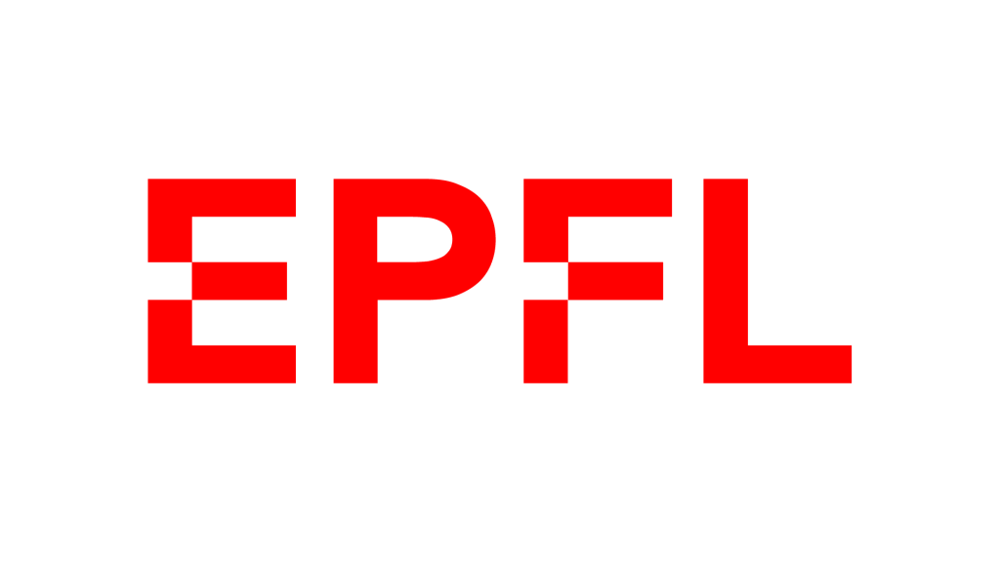
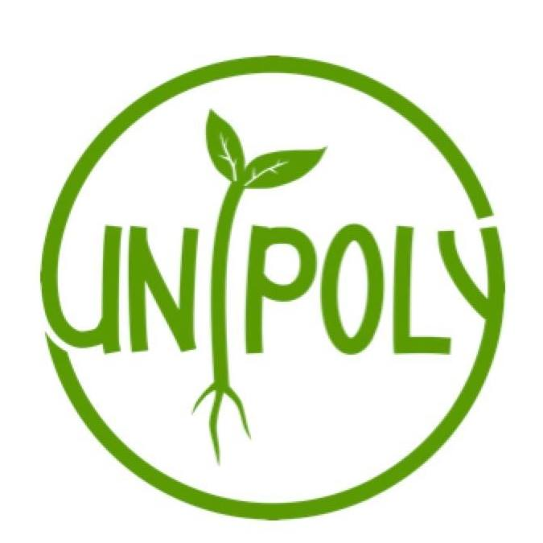
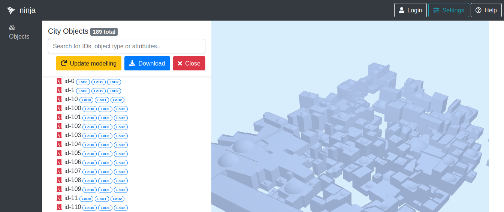
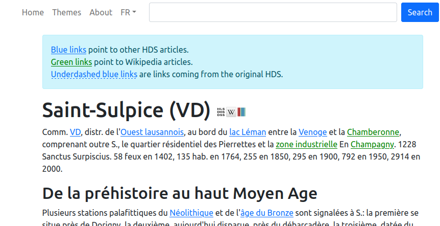
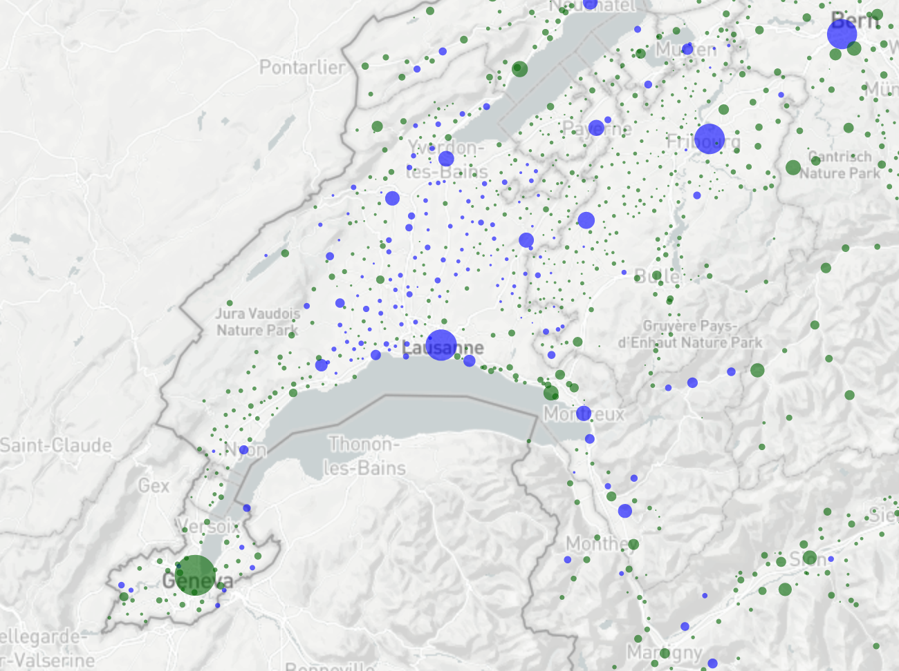
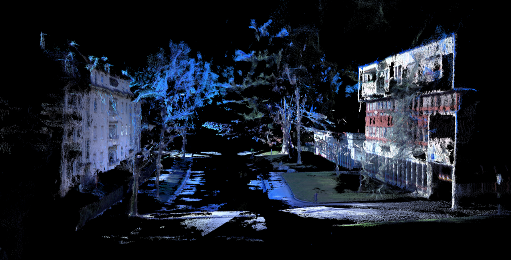

Didier Dupertuis
Full-stack developer passionate about web technologies, GIS, machine learning, history and space exploration. Looking for new opportunities as a DevOps/full-stack specialist.Relevant Experience
| Year | Experience | Location | |
|---|---|---|---|
|  | 03/21 current |
Doctoral student, Digital Humanities Laboratory (EPFL) Extracted entities from the 36'000 articles of the Historical Dictionary of Switzerland (HDS) and linked them to Wikipedia, resulting in a linked version of the HDS available here. Developed a web-based GIS platform to explore historical records from the 1808 Napoleonic cadaster of Venice as well as the 1741 Catastici (tax-records) Developed a web-based platform to explore and modify 3D models of historical cities in the cityJSON format. |
Lausanne, Switzerland |
| 10/20 02/21 |
Full-Stack Developer, Digital Humanities Laboratory (EPFL) Developed a demonstration website to explore 3D pointcloud scans of cities, beginning with Sion in Switzerland: scanvan.dhlab.epfl.ch. |
Lausanne, Switzerland | |
| 07/18 06/20 |
Research Engineer, Information Security and Privacy Lab (UNIL) Developped a web-app to explore questions of kin genomic privacy: santeperso.unil.ch. Participated in the creation of the kin genomic privacy algorithm behind the app. Conducted a user survey and did the data-analysis for the accompanying scientific paper. |
Lausanne, Switzerland | |
| 04/17 03/18 |
Data-management intern, Swiss Federal Statistical Office (SFSO) Created historicized geographical metadata to handle municipalities and regional data through time, now available as a web-app. Centralized unstructured excel regional data in a SQL database for my group. |
Neuchâtel, Switzerland | |
|  | 11/16 06/16 |
Treasurer and conference responsible, UniPoly, student association for sustainability In addition to my role as treasurer for the 2015 comittee, I organised a recruitment campaign and prepared 7 conferences/debates on sustainability topics as well as a visit of the Gösgen nuclear plant. |
Lausanne, Switzerland |
Education
| Year | Degree | Location | |
|---|---|---|---|
| 2017 |
Neural Networks for Machine Learning, coursera.org Certificate |
Lausanne, Switzerland | |
| 2013 2016 |
Master in Economics, University of Lausanne (UNIL) GPA Master: 5.26/6 Relevant courses: Applied econometrics, Macroeconometrics, Behavorial economics, Dynamic macroeconomic models. |
Lausanne, Switzerland | |
| 2009 2013 |
Bachelor in Computer Science, EPFL Third year exchange at the Royal Institute of Technology (KTH) in Stockholm. Relevant courses: Software Engineering, Artificial intelligence, Time Series Analysis. |
Lausanne, Switzerland |
Skills
Technical
Web: Javascript, React.js, Vue.js, OpenAPI, Flask, Node.js, Django, SassDeployment: Docker, Kubernetes
Programming: Python, Scala, Java, SQL, C/C++
Data-vizualisation: d3.js, Three.js, matplotlib
Machine learning: pandas, spacy, scikit-learn, PyTorch, R
Languages
French: Mother-tongueEnglish: Professional skills (C1)
German: Professional skills (C1)
Projects
In this project, we created a pipeline to create a documented 3d model from historical data. I developed a web-interface to interact and edit the 3d model. It allows to changes attributes (e.g. roof slope) and relaunch the procedural modelling of the city. Presented at the Digital Humanities 2023 conference.
The Historical Dictionary of Switzerland (HDS) is a fascinating source on Swiss history. Started in the 1980s as a paper-based encyclopedia, it was made without hyperlinks. With this project, I scraped the HDS's 36'000 articles, used a Natural Language Processing (NLP) model to recognize entities in the text and add hyperlinks to their corresponding HDS and Wikipedia articles. The linked HDS now offers a much more modern and intuitive exploration experience.
With the parcels of Venice project, the DHLAB is digitizing historical cadastral data for Venice: maps of parcels with their accompanying metadata (owners, rent, etc) As part of the Parcels of Venice project, I developed a platform to explore spatio-temporal cadastral registries. It allows to view parcels, their owner and metadata. Moreover, I supervised a student to perform named entity recognition on the 23'000 entries and disambiguate unique persons and link them to the parcels they own.

For this vizualisation, I extracted population data from texts of municipalities pages of the Historical Dictionary of Switzerland. Building upon the available data, I created a simple model to extrapolate the population of all municipalities until 1200.
The ScanVan project at EPFL is exploring new ways to create digital 3D models of cities using innovative cameras and algorithms. I developed a website to explore those 3D reconstructions, beginning with our first scan: the city of Sion.
Publications
| Year | Title | |
|---|---|---|
| 2023 |
From Automated Bootstrapping to Collaborative Editing: A Framework for 4D City Reconstruction,
Digital Humanities 2023 Conference
In this paper, we present a pipeline and platform to bootstrap 3d historical model of cities and continuously improve them in a versioned and documented manner. |
|
| 2022 |
KGP Meter: Communicating Kin Genomic Privacy to the Masses, 2022 IEEE 7th European Symposium on Security and Privacy (EuroS&P) Direct-to-consumer genetic testing services such as 23andMe or AncestryDNA have already attracted 26 million customers. These services raise privacy concerns, as some people share their genomic data publicly on platforms such as GEDmatch. Notably, sensitive information on health outcomes can be deduced not only on the tested person, but also on their close relatives. In this paper, we present KGP Meter, a new online tool that provides means for raising awareness in the general public about the privacy risks of genomic data sharing. |
|
| 2018 |
Inheritance Flows in Switzerland, 1911-2011, Swiss Journal of Economics and Statistics We estimate the annual inheritance flows and shares of inherited wealth in Switzerland over a long span of historical data, in close analogy to the study for France done by Thomas Piketty (QJE 2011). Coauthor with Élodie Moreau and Pr. Marius Brülhart. |